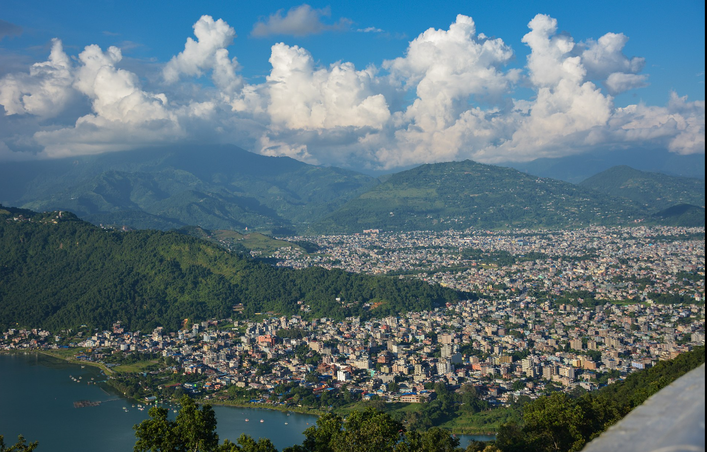
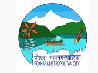
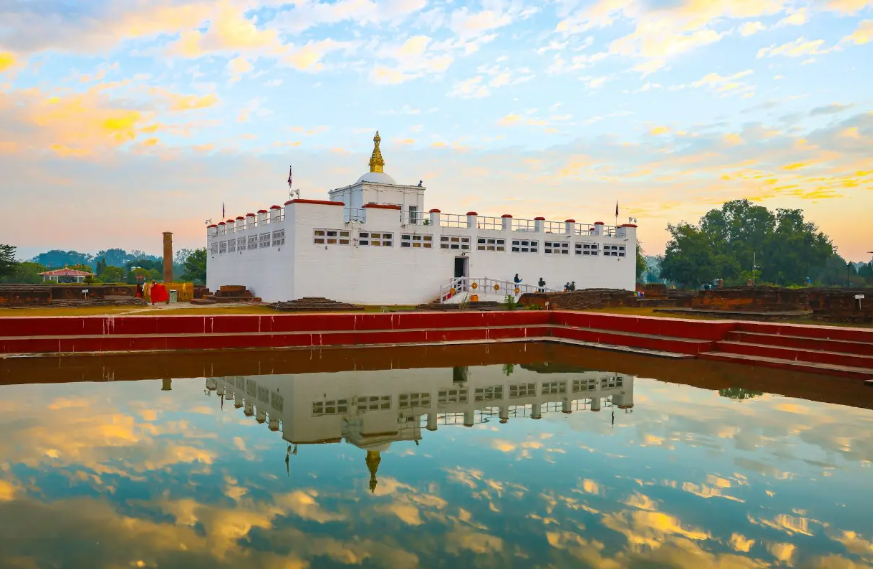

Pokhara
Pokhara is located 200 kilometres (120 miles) west of the capital, Kathmandu, on the shore of Phewa Lake, and sits at an average elevation of approximately 822 m above sea level. The Annapurna Range, with three out of the ten highest peaks in the world -Dhaulagiri, Annapurna I and Manaslu - is within 15-35 mi(24-56 km) aerial range from the valley.
In 2024, Pokhara was declared as the tourism capital of Nepal,being a base for trekkers undertaking the Annapurna Circuit through the Annapurna Conservation Area region of the Annapurna ranges in the Himalayas. The city is also home to many of the elite Gurkha soldiers, soldiers native to South Asia of Nepalese nationality recruited for the British Army, Nepalese Army, Indian Army, Gurkha Contingent Singapore, Gurkha Reserve Unit Brunei, UN peacekeeping forces and in war zones around the world.
5 best place to visit in Pokhara.
- Phewa Lake
- Sarangkot
- Poon Hill
- Baidam
- Pokhara Shanti Stupa


If you wanna learn more about Pokhara, click here.
Lumbini
Lumbini is a Buddhist pilgrimage site in the Rupandehi District of Lumbini Province in Nepal. According to sacred texts and Buddhist commentaries, Maya Devi gave birth to Siddhartha Gautama in Lumbini, c.563 BCE. Siddhartha Gautama achieved Enlightenment and became Shakyamuni Buddha, who founded Buddhism. He later passed into parinirvana at the age of eighty, c.483 BCE. Lumbini is one of four most sacred pilgrimage sites pivotal in the life of the Buddha.
Lumbini has a number of old temples, including the Mayadevi Temple, and several new temples funded by Buddhist organizations from various countries, a few of which are still under construction. Monuments, monasteries, stupas, a museum, and the Lumbini International Research Institute are also near to the holy site. There is a puskarini, or holy pond, where Mayadevi, the Buddha's mother, is believed to have taken ritual cleansing prior to his birth, and where he was first bathed. At other sites near Lumbini, earlier Buddhas were born, achieved ultimate Enlightenment and finally relinquished their earthly forms.
5 best place to visit in Lumbini.
- Maya Devi Temple
- Lumbini crane Sanctuary
- International Monasteries
- World Peace Pagoda
- Lumbini Museum

If you wanna learn more about Lumbini click here.
A short youtube video by foreign tourist trying street foods in Pokhara.
Here are some more beautiful places that you might wanna visit.
| Region | places |
|---|---|
| Kathmandu | Basantapur Durbar Square |
| Pashupatinath Temple | |
| Biratnagar | Dharan |
| Koshi Baradge | |
| Jhapa | Illam |
| Birtamode | |
| Mahendranagar | Mahakali Bridge |
| Shuklaphata National Park | |
| Lamjung | Mustang |
| Manang |
Suggest a new place to visit.
If you have some suggestion about beautiful places in Nepal, please fill the form below: